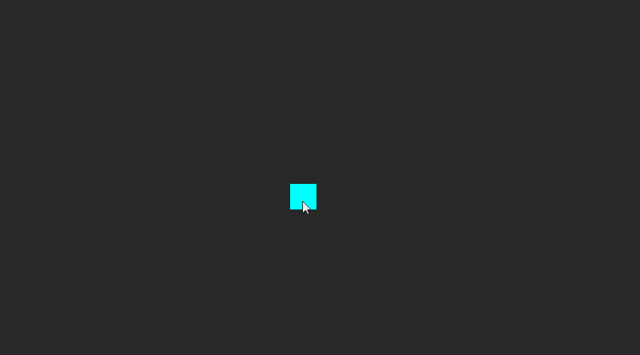

Mouse Input
Mouse input is one of the main systems of control, allowing aspects of gameplay to be controlled by either mouse movement or mouse buttons.
Common Uses
- Interacting with in-game objects
- Aiming and other game mechanics
- Camera movement
Using Mouse Input
Mouse input in Zero is most commonly handled in one of two ways:
- Event-Based Mouse Input: This method involves connecting to various
Viewport Mouse Eventsthat are dispatched by the Engine when the Mouse changes states. Mouse Events offer pre-calculated data that makes them much simpler to use than a frame-based input event system.Warning
There are times when the user will still need to calculate a WorldPosition that is in some way based off direct mouse input, despite the pre-calculated data. As ViewportMouseEvents only fire when the mouse is moved or has a button clicked, there are situations where the mouse’s calculated WorldPosition is not updated properly.
For example, the camera moves when the mouse does not. In this case, the cameras movement changes the data needed to calculate the mouse WorldPosition from the mouse screen position. However, because no ViewportMouseEvents were triggered, the logic that recalculates the WorldPosition using the new data is not run, leaving the WorldPosition of the mouse incorrect.
- Frame-Based Mouse Input: Rather than passively waiting for an Event to be sent, frame-based input queries the system every frame for the desired information, such as
MousePosition. This information is then used to perform the desired function. The drawback to using frame-based input is that, since it queries every frame update, it can can cause a performance hit if there are multiple objects using it.
Event-Based Mouse Input
When using an Event-Based system for Mouse input, the first thing to start with is to connect to the appropriate ViewportMouseEvent (MouseMove, MouseEnter, LeftMouseDown, etc.). This is done with Zilch Events, which can be connected to using the Zero.Connect syntax.
This connection can be made inside of any ZilchScript Component. For example:
class EventBasedMouseSample : ZilchComponent
{
[Dependency]
var Transform : Transform = null;
// Time in seconds to move object to new position
[Property]
var TimeToMove : Real = 1.0;
function Initialize(init : CogInitializer)
{
// Connect to the MouseMove Event dispatched onto the Space and name the
// response function (i.e., this.OnMouseMove)
Zero.Connect(this.Space, Events.MouseMove, this.OnMouseMove);
}
// The response function called when this component "hears" the MouseMove event
function OnMouseMove(event : ViewportMouseEvent)
{
// Get world position of the mouse
var mouseWorldPosition = event.ToWorldZPlane(0);
// Move the object to the mouse position over time using Actions
var seq = Actions.Sequence(this.Owner.Actions);
Action.Property(seq,
@this.Transform.Translation,
mouseWorldPosition,
this.TimeToMove,
Ease.QuadInOut);
}
}
The component above attached to a simple Sprite object:

In the example above, the MouseMove event is used to change the position of the object, moving it to where the mouse is; however, this is only one of many ViewportMouseEvents that can be used. To find more information on Events in general as well as a a full list of all built-in Events, please see the Events and Connections Page.
Frame-Based Mouse Input
When using a frame-based input system, instead of connecting to any specific Mouse Events the ZilchScript will instead connect to LogicUpdate in order to get the information desired every frame. That information can then be used to change any parameters that need to be changed. In order to emulate the previous example of having an object follow the mouse position, some information will also be needed from the CameraViewport Component. By default, the CameraViewport Component is found on the LevelSettings object but can be moved to any object, which allows for Split-Screen or Multi-Viewport games.
class FrameBasedMouseSample : ZilchComponent
{
[Dependency]
var Transform : Transform = null;
// Speed at which the object will interpolate to the mouse position
[Property]
var Speed : Real = 5.0;
function Initialize(init : CogInitializer)
{
// Connect to the LogicUpdate Event and assign the function to be called
Zero.Connect(this.Space, Events.LogicUpdate, this.OnLogicUpdate);
}
function OnLogicUpdate(event : UpdateEvent)
{
// Find the position of the Mouse on the Computer Screen
var mouseScreenPosition = Zero.Mouse.ScreenPosition;
// Use the position of the Mouse on the Computer Screen to find the position of the
// Mouse on the Game Screen at a depth of 0
var mouseWorldPosition =
this.LevelSettings.CameraViewport.ScreenToWorldZPlane(mouseScreenPosition, 0);
// Move the object (through linear interpolation) to mouse position over time
this.Transform.Translation =
Math.Lerp(this.Transform.Translation, mouseWorldPosition, event.Dt * this.Speed);
}
}
Applying the frame-based component to an object results in this type of behavior:

By comparing the two examples, it’s easy to see that both systems are fairly easy to put in place, and they both have their strengths and weaknesses. Think about what is needed from the mouse to decide which system will be put to better use.
Properties of ViewportMouseEvents
ViewportMouseEvents all have access to various shared properties and methods regardless of what event is being called. event.ShiftPressed, event.AltPressed and event.CtrlPressed will allow the user to check if any of those buttons were being pressed at the same time the Mouse Event was dispatched to allow different functionality if any of the buttons were. It also becomes possible to create a Mouse Input system that is uses Space based events by using event.HitObject to find which object was hit by the mouse.
function Initialize(init : CogInitializer)
{
// Connect to the MouseDown event, but on the Space rather than Owner
Zero.Connect(this.Space, Events.MouseDown, this.OnMouseDown);
}
function OnMouseDown(event : ViewportMouseEvent)
{
// Check to make sure an object was hit
if (event.HitObject != null)
{
// Insert code here
}
}
By placing this component onto the LevelSettings or any other object that will be permanently in the level, any game object in that level that has the Reactive component attached will trigger the code block while anything without Reactive will be ignored. The Zero engine is able to determine what it hits based on a Raycast that is also accessible from the event data: event.WorldRay returns the instance of the Ray used; event.RayStart returns the starting location of the Ray in world space; event.RayDirection returns the direction the ray traveled in to hit the option; event.HitObject is a reference to the Cog hit by the Ray, while event.HitPosition returns the location where the object was hit, again in world space. This can be used to create visual feedback in a specific area easily.
[Property]
var MyArchetype : Archetype;
function Initialize(init : CogInitializer)
{
// Connect to the MouseDown event, but on the Space rather than Owner
Zero.Connect(this.Space, Events.MouseDown, this.OnMouseDown);
}
function OnMouseDown(event : ViewportMouseEvent)
{
// Check to make sure an object was hit
if (event.HitObject != null)
{
// Given an archetype, the engine can create one in the area that was hit
this.Space.CreateAtPosition(this.MyArchetype, event.HitPosition);
}
}
Aside from event.HitPosition, event.HitNormal can be used to automatically determine the normal vector the face of the reactive object that the Raycast first hit. This can be helpful in determining angles of reflection.
The mouse buttons themselves gain some added functionality from dispatched events as well. event.Button will return the mouse button that was depressed to trigger the event (either Left, Right, or Middle), while event.MouseDown returns a bool stating whether any mouse button is down. event.IsButtonDown or IsButtonUp can be used to check specific mouse buttons as well, passing in MouseButtons.Left, Right or Middle as a parameter.
ViewportMouseEvents have built in functions for determining the mouse position on multiple planes: event.ToWorldPlane takes a normal vector that is a Real3 as well as a Real3 position and finds the mouse in any arbitrary plane; event.ToWorldViewPlane takes a Real as the depth of the mouse and returns the mouse position on the view plane at that depth; and event.ToWorldZPlane also takes a Real as the depth and returns the mouse position in the world plane at the given Z depth. A good example of using these functions can be found in the Custom Cursor manual page.
Properties and Methods of the Mouse
Mouse Events
MouseEnter:ViewportMouseEvent- An Event dispatched to an object with the Reactive Component when the Mouse enters the objects area.
MouseEnterPreview:ViewportMouseEvent- An Event dispatched to an object with the Reactive Component when the Mouse enters the objects area. This event is sent before any other Mouse Event.
MouseExit:ViewportMouseEvent- An Event dispatched to an object with the Reactive Component when the Mouse exits the objects area.
MouseUpdate:ViewportMouseEvent- An Event dispatched to an object with the Reactive Component as the Mouse hovers over the objects area.
MouseScroll:ViewportMouseEvent- An Event dispatched to an object with the Reactive Component when the Mouse scroll wheel is turned while over the objects area.
MiddleMouseDown:ViewportMouseEvent- An Event dispatched to an object with the Reactive Component when the Mouse scroll wheel is depressed while over the objects area.
MiddleMouseUp:ViewportMouseEvent- An Event dispatched to an object with the Reactive Component when the Mouse scroll wheel is released while over the objects area.
MouseDown:ViewportMouseEvent- An Event dispatched to an object with the Reactive Component when either Mouse button is depressed while over the objects area.
MouseUp:ViewportMouseEvent- An Event dispatched to an object with the Reactive Component when either Mouse button is released while over the objects area.
RightMouseDown:ViewportMouseEvent- An Event dispatched to an object with the Reactive Component when the right Mouse button is depressed while over the objects area.
RightMouseUp:ViewportMouseEvent- An Event dispatched to an object with the Reactive Component when the right Mouse button is release while over the objects area.
LeftMouseDown:ViewportMouseEvent- An Event dispatched to an object with the Reactive Component when the left Mouse button is depressed while over the objects area.
LeftMouseUp:ViewportMouseEvent- An Event dispatched to an object with the Reactive Component when the left Mouse button is released while over the objects area.
DoubleClick:ViewportMouseEvent- An Event dispatched to an object with the Reactive Component when either Mouse button is double clicked while over the objects area.